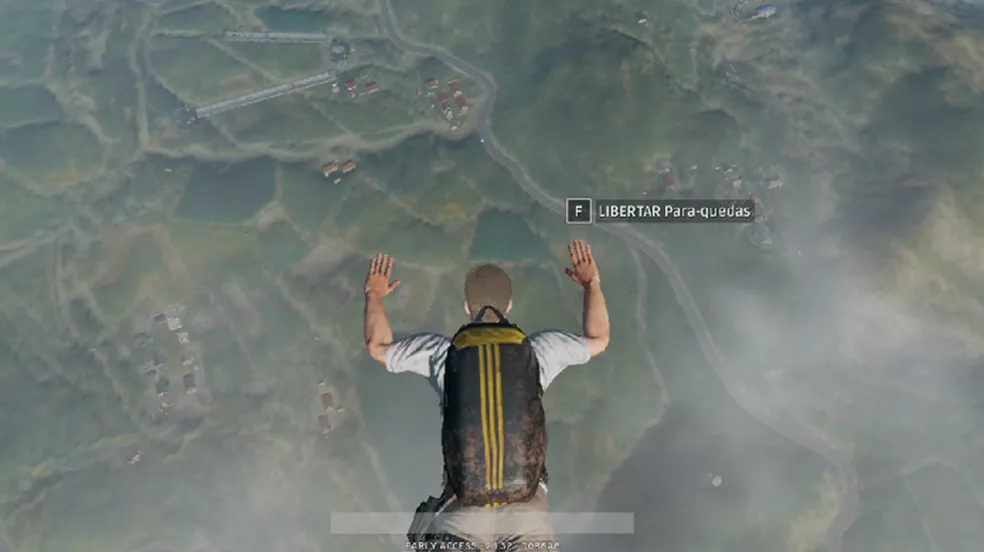
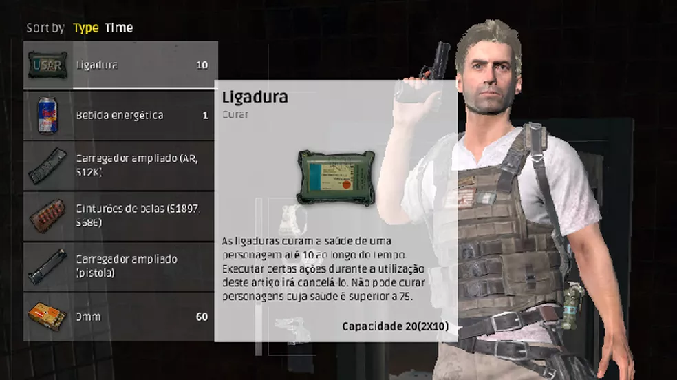

Player Unknown's Battlegrounds (PUBG) é um jogo eletrônico multiplayer desenvolvido pela PUBG Corporation
(atual PUBG Studios), subsidiária da produtora coreana Bluehole (atual Krafton), utilizando o motor de jogo Unreal
Engine 4. O PlayerUnknown's Battlegrounds é um game de tiro e sobrevivência para PC produzido pelo criador
do modo Battle Royale de Arma 3 e H1Z1 que tem ganhado popularidade no serviço de acesso antecipado do Steam.
O jogo traz intricados combates entre até 100 jogadores online, sempre com situações inesperadas e muita tensão.
Como Jogar:
O game funciona como se houvesse etapas. Inicialmente você irá saltar de um avião com a tecla F para pular de
paraquedas no mapa do game. Assim que aterrissar você terá que entrar em casas e prédios em busca de armas
e suprimentos para se equipar. O combate é liberado desde o início, então é preciso estar preparado para se defender
o mais rápido possível. Eventualmente o jogo irá exigir que você siga para uma área demarcada no mapa, um círculo
branco. Após estar dentro desse círculo ele continuará a encolher e irá forçar cada vez mais que os jogadores se
movimentem e acabem por ser encontrar em combate. Ficar fora do círculo é mortal e drenará sua energia bem rápido.
O número no canto superior direito indica quantas pessoas ainda estão vivas e seu objetivo é ser o último sobrevivente.

Eventualmente o jogo irá exigir que você siga para uma área demarcada no mapa, um círculo branco.
Após estar dentro desse círculo ele continuará a encolher e irá forçar cada vez mais que os jogadores
se movimentem e acabem por ser encontrar em combate. Ficar fora do círculo é mortal e drenará sua
energia bem rápido. O número no canto superior direito indica quantas pessoas ainda estão vivas e seu
objetivo é ser o último sobrevivente.

Controles:
Mover-se - W, A, S, D
interagir - F
Trocar arma - 1, 2, 3, 4, 5 ou roda do Mouse
Atirar - Clique esquerdo do Mouse
Mirar - Clique direito do Mouse
Recarregar - R
Abaixar - C
Deitar - Z
Pular - Barra de espaços
Abrir inventário - I
Mudar câmera - V
Abrir o mapa - M
Chat - T
Silenciar chat - Ctrl + T
Kit de Primeiros socorros - 7 ou 8
Usar ligadura - 9
Item de suporte - 0
Mudar modo de tiro de uma arma - B
Informações Adicionais
Gênero
Ação-aventura
Modo de Jogo:
Multijogador
Lançamento
Microsoft Windows
Dispositivos
Android & iOS, Xbox One, PlayStation
Curiosidades:
Uma curiosidade que ressalta o elemento de sobrevivência do game é que não é possível curar
seu personagem completamente com apenas um tipo de item, é preciso ter acesso a vários.
Kits de primeiros socorros e ligaduras só são capazes de restaurar a energia de seu personagem
até 75%, os outros 25% só podem ser recuperados com analgésicos e bebidas energéticas.